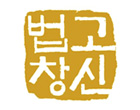
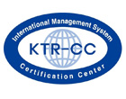

국순당 개요
좋은 술의 고집
국순당은 술을 빚기 전에 먼저 사람을 생각하는 마음으로 우리술 문화를 되살리며, 한국을 대표하는 세계적 명주를 만들기 위해 노력하고 있습니다.
우리술을 통해 전해지는 제법과 특성을 넘어 건강하게 즐기던 우리술의 문화까지 국순당 술에 담아 전하고자 합니다.
전통을 오늘에 맞게
법고창신
국순당은 지난 1952년 창업이래 우리 전통주의 근본인 누룩의 고유한 제조법을 계승, 발전시키는데 주력하여 현대인의 입맛에 맞게 끊임없이 개선해 왔습니다.
30년 전통의 부설연구소는 국내 유일의 전통 누룩 연구소로 전통주의 복원에 앞장서고 있습니다.
-
백세주, 주류 최초
대한민국 우수 문화상품 지정 -

우리술 복원 사업을 통해
다시 태어난 천 년 전 우리술
전통주 업계 최초로 환경부 지정
녹색기업
좋은술의 품질을 넘어 더불어 함께 사는 환경까지 생각합니다. 맑은 공기와 청정한 자연수 그리고 술 빚는 정성과 자연이 어우러진 횡성에 국순당 양조장이 있습니다.
이산화탄소 발생이 적은 친환경 생쌀발효법을 사용하고, 용기 경량화를 통하여 탄소 소비를 최소화합니다.
-

ISO 9001, ISO 14001 획득
-

녹색기업 지정
-
전 품목 HACCP 인증
전통을 오늘에 맞게
법고창신
국순당은 지난 1952년 창업이래 우리 전통주의 근본인 누룩의 고유한 제조법을 계승, 발전시키는데 주력하여 현대인의 입맛에 맞게 끊임없이 개선해 왔습니다.
30년 전통의 부설연구소는 국내 유일의 전통 누룩 연구소로 전통주의 복원에 앞장서고 있습니다.